Overview
Geometric modeling helps us to simulate complex objects using different shading and meshing technique. Specifically in project 2, we implemented several methods related to Bezier curves, Bezier surfaces, area-weighted normal of vertex for phong shading, and mesh editing. We are also introduced to the de Casteljau algorithm and the half-edge data structure, giving us the methodology for completing these tasks. Finally, we were able to render Bezier curves and Bezier surfaces, as well as altering triangle meshes that yield different visualization of geometric objects.
Section I: Bezier Curves and Surfaces
Part 1: Bezier Curves with 1D de Casteljau Subdivision
Briefly explain de Casteljau's algorithm and how you implemented it in order to evaluate Bezier curves.The Casteljau's algorithm is a recursive algorithm that helps us find an perfectly interpolated curve along a series of control points. Specifically, given an input of \(n\) control points and parameter \(t\), we return a single interpolated point that can help us draw the curve by following these steps:
- For each edge formed by neighboring control points, find a new point on that edge using linear interpolation with \(t\in[0,1]\). This can be calculated by \(p_i'=p_i * (1-t) + p_{i+1} * t\).
- Connect all neighboring new point to form another level of control points.
- Recursively calling this function with new control points until we get a single point, in which case we will return.
Take a look at the provided .bzc files and create your own Bezier curve with 6 control points of your choosing. Use this Bezier curve for your screenshots below.
I created a new file "curve3.bzc" that has six control points. The screenshots below is based on this file.
Show screenshots of each step / level of the evaluation from the original control points down to the final evaluated point. Press E to step through. Toggle C to show the completed Bezier curve as well.|
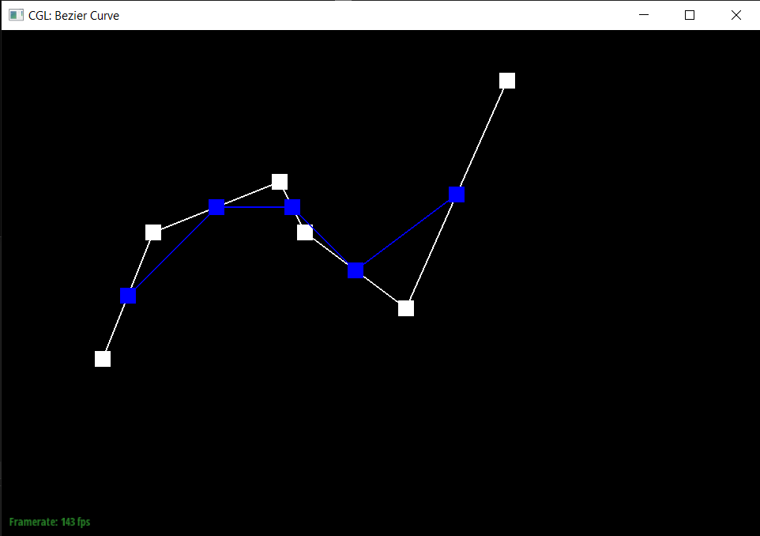
|
|
|
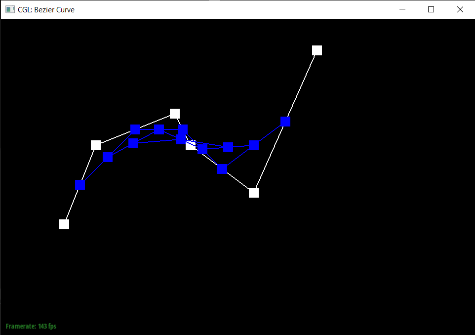
|
|
|
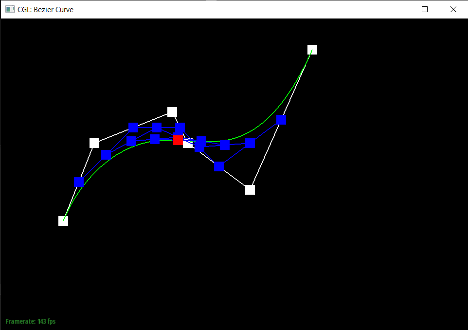
|
Show a screenshot of a slightly different Bezier curve by moving the original control points around and modifying the parameter \(t\) via mouse scrolling.
|
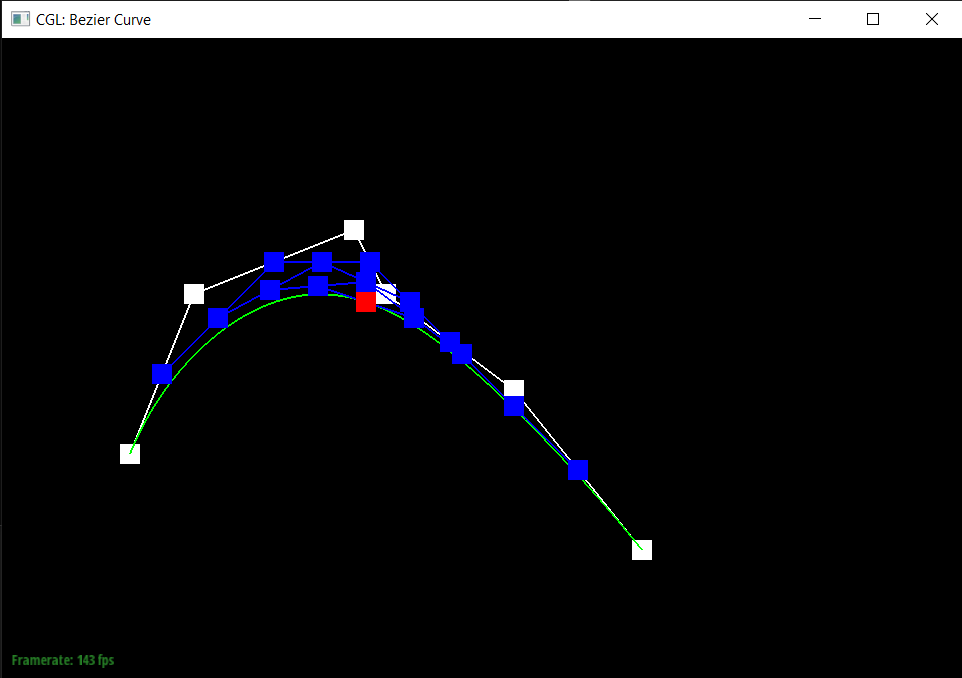
|
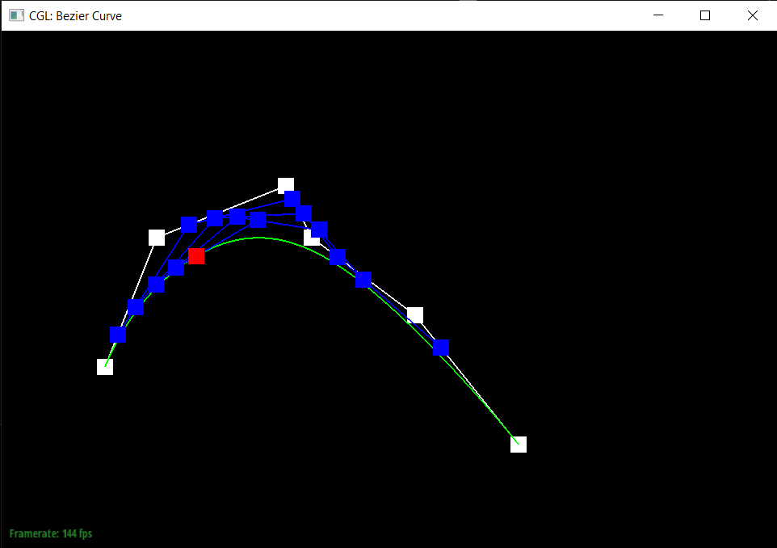
|
Part 2: Bezier Surfaces with Separable 1D de Casteljau
Briefly explain how de Casteljau algorithm extends to Bezier surfaces and how you implemented it in order to evaluate Bezier surfaces.The de Casteljau's algorithm can be extended to evaluate Bezier surfaces by doing a 2D version of the algorithm. Specifically, given a 2D array of control points and two parameters \((u,v)\) as input, we can output a single interpolated point that can help us draw the surface by following these steps:
- For each group of control points, we see them as a series of control points in a row, and we find a single point of this row by calling our 1D de Casteljau's algorithm mentioned above with parameter \(u\).
- For each newly calculated single points from each row, we see them as series of control points in a colomn, and we find a single point of this colomn by calling our 1D de Casteljau's algorithm mentioned above with parameter \(v\). This give us the final evaluated point on the Bezier surface.
Show a screenshot of bez/teapot.bez (not .dae) evaluated by your implementation.
Section II: Triangle Meshes and Half-Edge Data Structure
Part 3: Area-Weighted Vertex Normals
Briefly explain how you implemented the area-weighted vertex normals.To find the area-weighted vertex normals of a specific vertex, we iterate through all neighboring faces of that, and calculate the normals using cross products. We then sum them and normalize them at the end. Specifically, we follow these steps:
- Retrieve the half edge associated with this vertex.
- Use the "next()" function of the current half edge to find the next half edge, and use the "vertex()" function give us the source vertex of the current half edge. These two functions can help us find a face associated with the current half edge, and also the three vertices of this face.
- Apply cross product by using the three vertices can give us the normal vector of the current face, and we know half of the length of the normal vector is the area of the triangle formed by vectors from the cross product. We multiply the area with the normal vector of the face, and added it to our cumulative normal vector.
- Find the next face by finding the associated half edge, which can be acquired by taking the "twin()" of the current half edge and get the "next()" of it. Repeat the previous step until we added the normal vectors of all surrounding faces to our cumulative normal vector.
- Lastly, normalize the cumulative normal vector and return it.
Show screenshots of dae/teapot.dae (not .bez) comparing teapot shading with and without vertex normals. Use Q to toggle default flat shading and Phong shading.
|
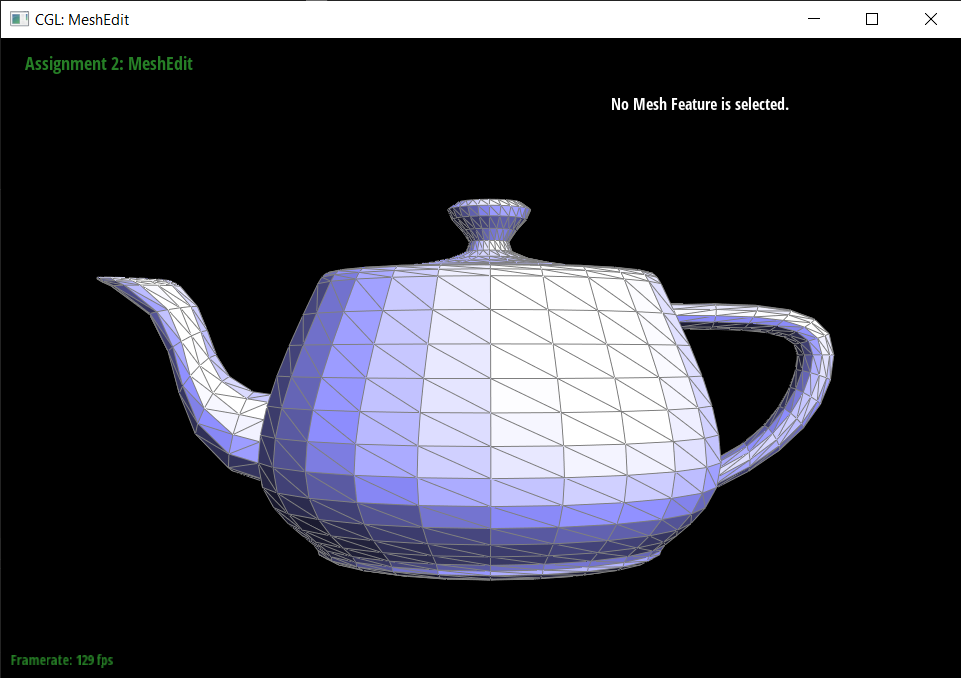
|
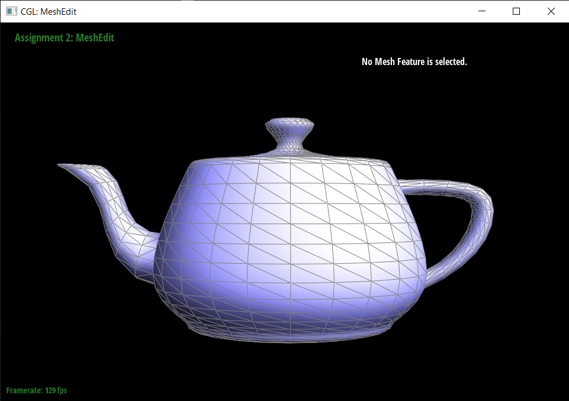
|
Part 4: Edge Flip
Briefly explain how you implemented the edge flip operation and describe any interesting implementation / debugging tricks you have used.
|
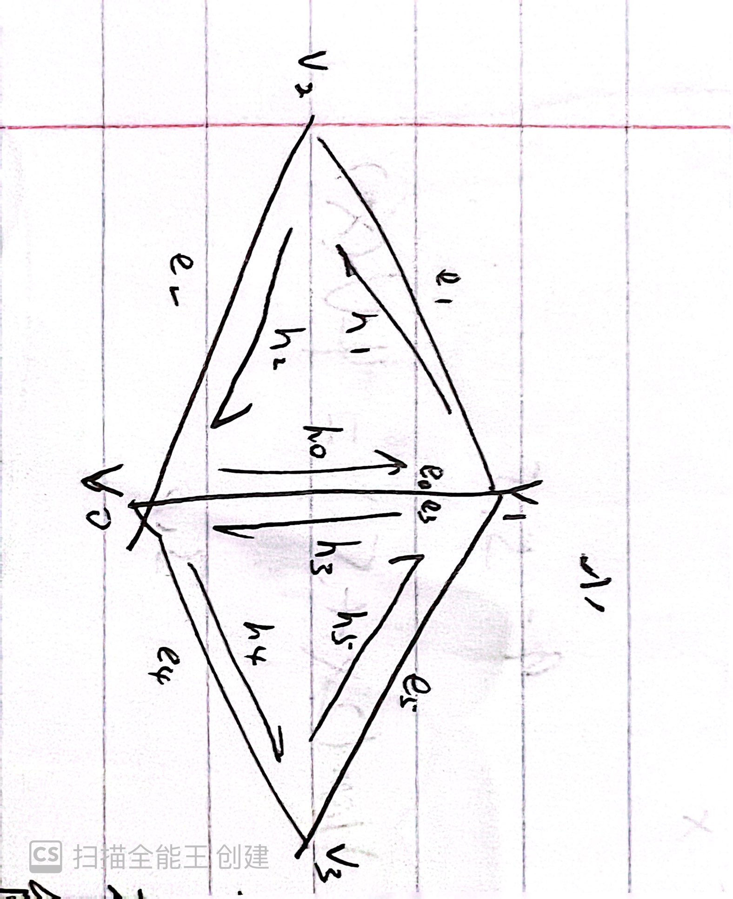
|
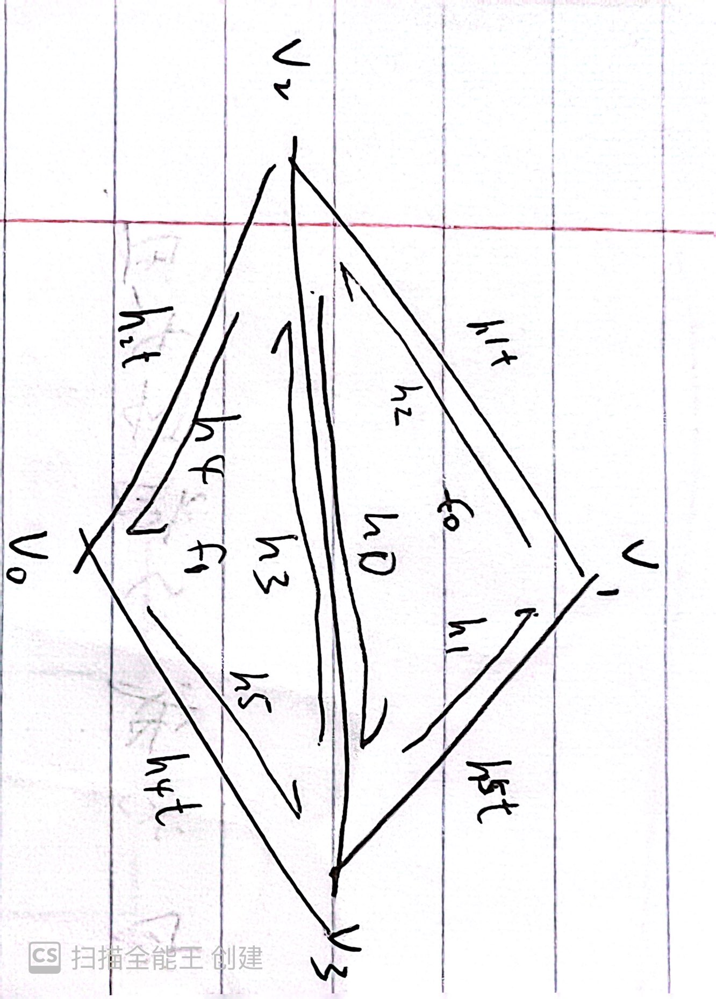
|
To solve the edge flip problem, we first drew a graph of the original pair of triangles (shown in Figure NO), we marked all the vertices, edges, faces, and halfedges on the graph. We also drew a graph of the triangles after edge flip and marked all the elements in the new graph. By doing this, we can easily map the old components to the new components. This step simplifies the process of transfer geometric concept to runnable code. To implement the flipEdge, we did following steps:
- Check if the edge is on boundary. If yes, we do not flip the edge.
- Based on the original graph, we assign all the vertices, edges, faces, and halfedges. In addition, we records the twin halfedges of 4 halfedges on the sides (h1t, h2t, h4t, h5t in the graph), since fliping edges will affect them as well.
- Decide if there is new element been created. In flipEdge case, there is no new element initiated.
- Comparing the graphs of mesh before and after edge fliping, we assign new halfedges to all the vertices, edges, and faces. Noticing that edge is direction-less, so we only assign one halfedge to each edge. We assign the corresponding halfedge to the vertex if the vertex locates on the halfedge's point-from position.
-
Re-assign each halfedge's next, twin, vertex, edge, and face by calling
Halfedge::setNeighborson each one of them, based on the after-flip graph we drew. Noticing since we flip the edge e0, the original halfedge h0 points from v2 to v3 now. And h0 and its twin h3 share the same edge e0. Also noticing that we need to re-assign all the properties of the 4 twin halfedges outside this pair of triangles too (h1t h2t h4t h5t), because their vertices, twins, and edges were changed. - Finally, we returned the edge e0 we passed into this function, and it is flipped already.
Show screenshots of the teapot before and after some edge flips.
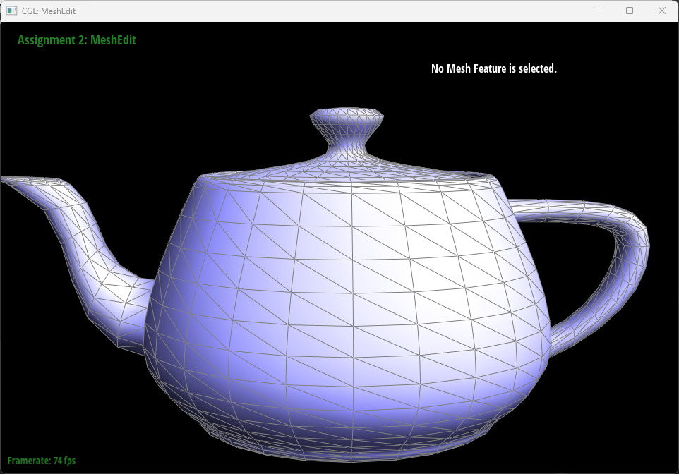
dae/teapot.dae before edge flip |
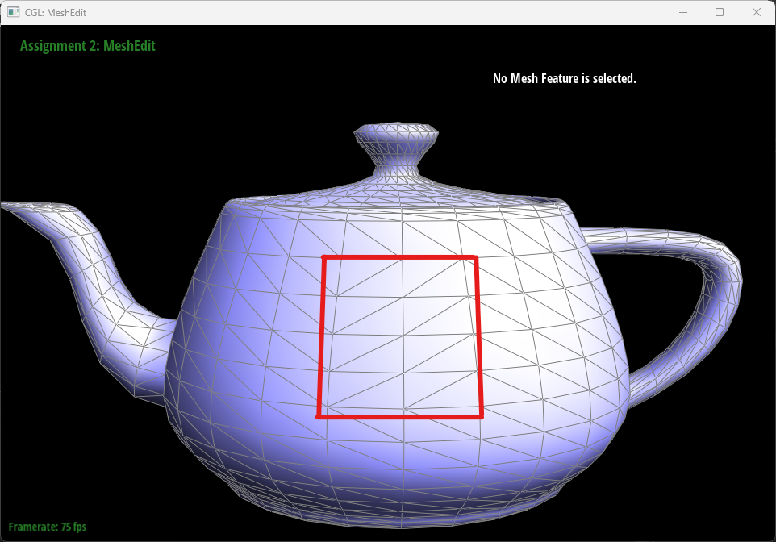
dae/teapot.dae after multiple edge flip |
Write about your eventful debugging journey, if you have experienced one.
When we first compiled the code, we forgot the vertices of each pair of the halfedge on the side and its twin are different (eg. h2 and h1t in the figure), and we assigned wrong vertices to the twin halfedges. Therefore, when we flip the edge, it turns the peripheral triangles (corresponding to h1t h2t h4t h5t) into transparent triangles.
Part 5: Edge Split
Briefly explain how you implemented the edge split operation and describe any interesting implementation / debugging tricks you have used.
|
|
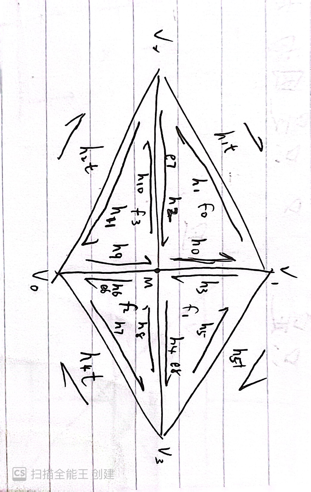
|
First, we reused the graph we drew for the original pair of triangles (shown in Figure NO). And we drew the grpah of four triangles after edge split (shown in Figure ) and marked all the elements in the new graph. We also marked all the newly added vertex, edges, faces and halfedges. We did these in order to map the old components to the new components. To implement the flipEdge, we did following steps:
- Check if the edge is on boundary. If yes, we implement a different edge split (for extra credits).
- Based on the original graph, we assign all the vertices, edges, faces, and halfedges. We still records the twin halfedges of 4 halfedges on the sides.
- Decide if there is new element been created. In splitEdge case, since the original two triangles are splited into four triangles, there are new elements. We found there were one new vertex, three new edges, and two new faces. Since each edges corresponded to two halfedges (we only need to assign one to the edge), we created six new halfedges. Later, we set the isNew flag of those new elements to True. As the edge e0 and e6 were generated from the old edge, we set their flags to False.
- Comparing the graphs of mesh before and after edge splitting, we assign new halfedges to all the vertices, edges, and faces. We also need to assign the new halfedges to the elements. In this case, the graph we drew significantly improved our efficicency.
-
Re-assign each halfedge's next, twin, vertex, edge, and face by calling
Halfedge::setNeighborson each one of them, based on the after-split graph we drew. In the middle, the new vertex m has degree of 4. Each pair of the twin halfedges in the middle shares the same edge. Also do not forget the 4 twin halfedges outside our splited triangles (h1t h2t h4t h5t). - Finally, we returned the new vertex created by edge splitting.
Show screenshots of a mesh before and after some edge splits.
dae/teapot.dae before edge split |
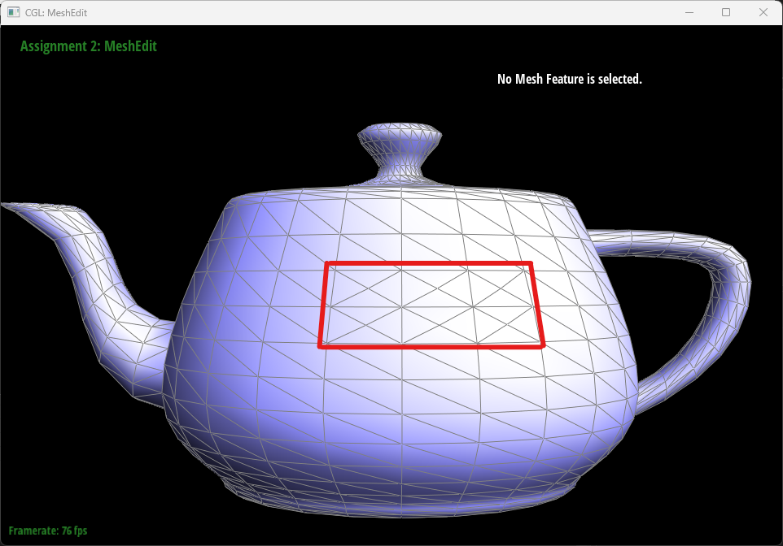
dae/teapot.dae after edge split |
Show screenshots of a mesh before and after a combination of both edge splits and edge flips.
dae/teapot.dae before edge flip and split |
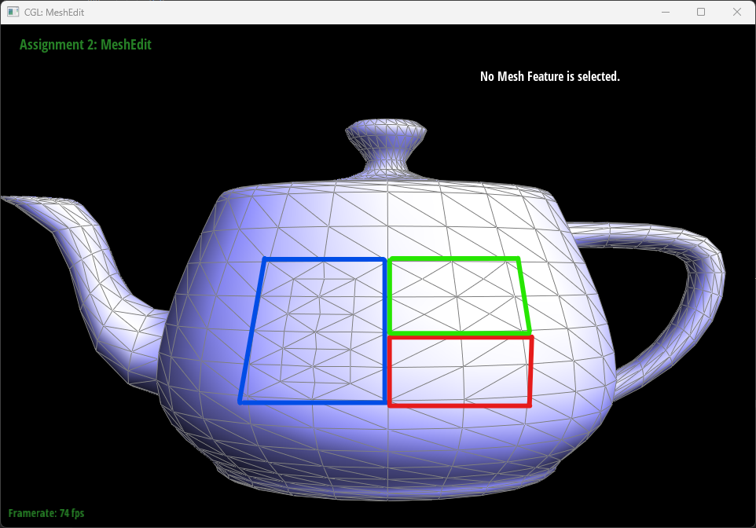
dae/teapot.dae after edge flip and split (red is flip, green is split, blue is mix) |
Write about your eventful debugging journey, if you have experienced one.
Thanks to the graphs we drew, our code compiled and ran successfully on the first attemp. However, we later updated the code by setting the isNew flag to True for those new edges and vertices (we have two new edges and one new vertex in total). This update helps we write the unsampling method.
If you have implemented support for boundary edges, show screenshots of your implementation properly handling split operations on boundary edges.
YOUR RESPONSE GOES HERE
Part 6: Loop Subdivision for Mesh Upsampling
Briefly explain how you implemented the loop subdivision and describe any interesting implementation / debugging tricks you have used.By using the flipEdge and splitEdge in previous tasks, we are able to implement the loop subdivision. There are two main tasks to complete in this function. First is to subdivide each triangle in the mesh into 4 triangles, using 4-1 subdivision. Second is to place the vertices onto the new position, based on weighted average of neighboring vertex positions. We have two different formula to compute for newly added vertices and existed vertices. We split the task into 5 steps and implemented each one within a loop:
-
First, we calculated the new position for each existing vertex in the mesh. In this step, we used the formula
(1 - n * u) * original_position + u * original_neighbor_position_sum. The float number u depends on the degree n of the vertex (shown in Figure). We then calculated the sum of neighbors' positions using halfedge iteration, and we got the new position for each vertex. - Second, we calculated each new vertex's position and stored it in its edge's property newPosition, since we had not splited the edges yet. In this step, we used the formula \(\frac{3}{8} * (A + B) + \frac{1}{8} * (C + D)\) with vertices A, B, C, D shown in picture. We got those vertices' positions by finding the correct halfedges first.
-
Thrid, we wanted to split all the existing edges. We looped through each edge in the
mesh.edges, checked if it was new edge (turn out this step is not necessary), and split this edge. After edge split, we got a new vertex, and we assigned the position calculated in step two to the vertex's newPosition property. -
Fourth, for each new edge added in step 3, we got its two vertices \(V0, V1\) using its halfedge and halfedge's twin. We filter out those edge with one new vertex and one old vertex, using the condition
(v0->isNew != v1->isNew)(logic \(XOR\)). We flipped those edges like the picture below. - Last, we looped through all the vertices in mesh. We updated each vertex to its new position and set its isNew flag to False.
-
One debugging trick is to print out every new vertex and edge to see if there is any unexpected behavior. One bug we saw was that the cube mesh was twisted into an irregular shape after
the first subdivision and could not be divided anymore. We used the debugging trick and found out that we used to loop through
mesh.edgeswhen we did the edge split. As the edge splitting pushed new edges into the edge list, we unconsciously splited the new edges we did not want to split. We fixed this issue by remembering the original list size before doing the edge split. And we only looped through length of original edge list.


Take some notes, as well as some screenshots, of your observations on how meshes behave after loop subdivision. What happens to sharp corners and edges? Can you reduce this effect by pre-splitting some edges?
We unsample the cube in dae/cube.dae to show the smoothen effect.
|
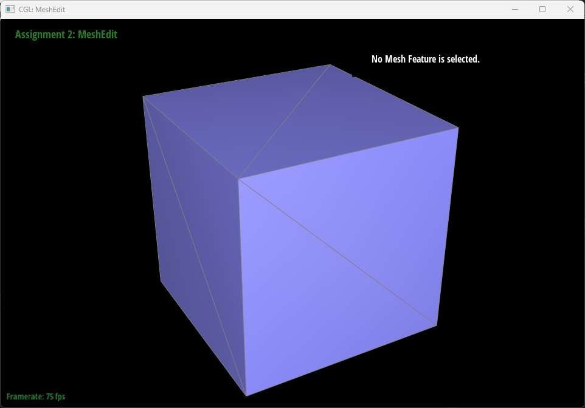
|
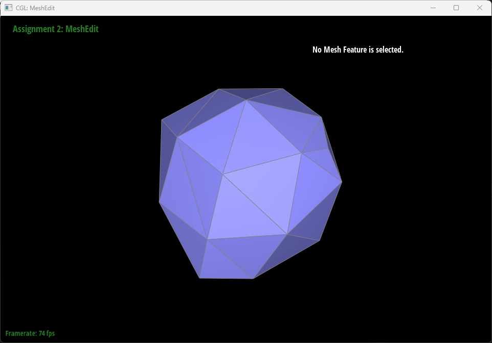
|
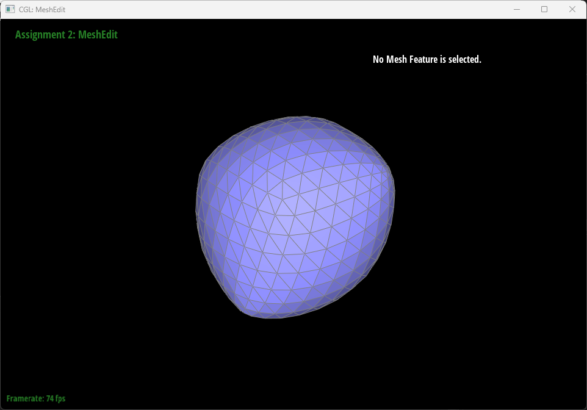
The corners and edges become smooth after 3 rounds of loop subdivision |
Shown by the pictures above, we see that the cube's corners and edges become much smoother than the original cube, and the mesh surface becomes smoother too. This is because, when we unsample the mesh, we recalculate the position for all existing vertices and possible new vertices. The position of a new vertex is the sum of weighted positions of its 4 neighbors, and the new position of an existing vertex is recalculated using weighted average positions of neighboring vertices. Therefore, the vertices on cube's edges and corners are smoothed by taking the average of the neighboring vertices, which makes the cube look round and smooth after unsampling.
To solve the over-smooth issue and maintain the sharp corners and edges, we can be manually splits the edges around the sharp edge, like the picture shown below. We first split the edges on two faces which have the targeted edge (we want to make this edge sharp). Then we split the targeted edge, and we see two new edges perpendicular to the targeted edge. We want to keep splitting those two new edges, and we split more edges that are close to the targeted border (to make the lines denser nextto the targeted border). When we unsample the cube, we recalculate the position of vertices using the weighted average positions of its neighbors. When we subdivide the dense area of the mesh, the new vertex position would be close to its old position, since some of its neighbors are close to its old position. This manual process yields a sharp corner, border, or surface.
|
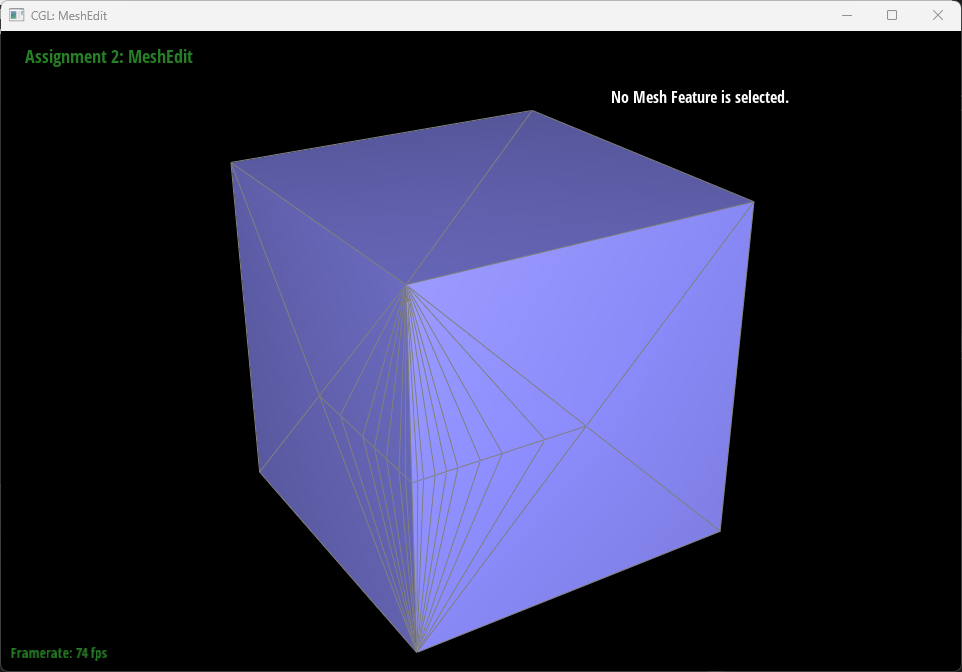
|
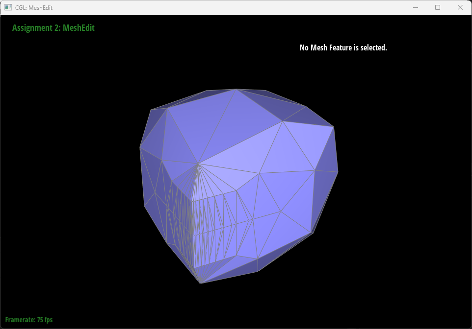
|
|
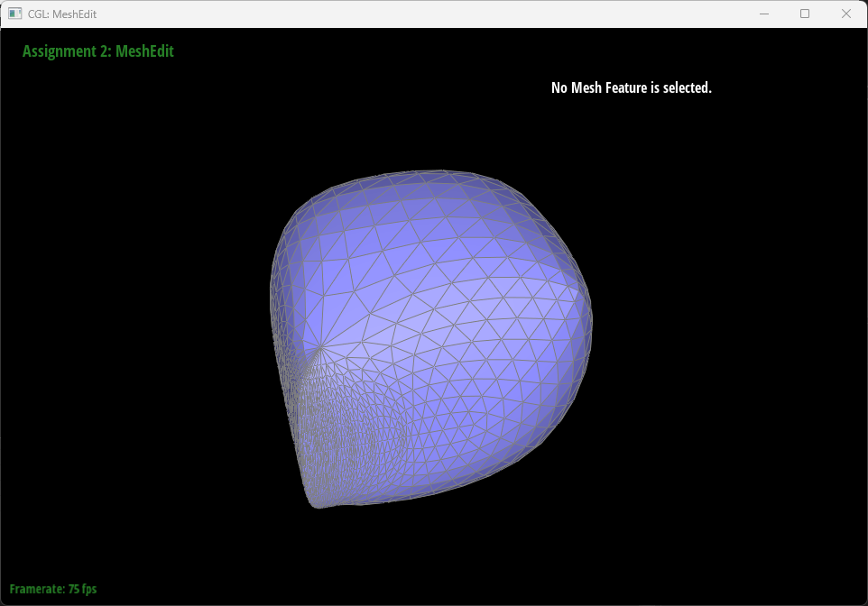
|
Load dae/cube.dae. Perform several iterations of loop subdivision on the cube. Notice that the cube becomes slightly asymmetric after repeated subdivisions. Can you pre-process the cube with edge flips and splits so that the cube subdivides symmetrically? Document these effects and explain why they occur. Also explain how your pre-processing helps alleviate the effects.
In the pictures below, we see that doing loop subdivision on the dae/cube.dae yields an asymmetric shape. Especially in the fourth picture, we can
clearly tell the mesh has asymmetric shape from overlook perspective. This is caused by calculating the new vertices during edge split. The original cube has only
one edge on each face. Recalling the formula \(\frac{3}{8} * (A + B) + \frac{1}{8} * (C + D)\), when we calculate the new vertex on an edge,
we actually assign different weights to different neighbor vertices. Regarding the formula above, we see that Vertex A and B have more weight than C and D do.
Those vertices with more weights would affect the new vertex more, resulting in asymmetric shape. Also, for all 8 existing vertices in cube, they have different degrees
they connect to different numbers of edges. During unsampling, the vertex with different degrees will have different ways to calculate its new position, as we take weighted averages
of neighboring vertices. After several rounds of subdivisions, the sharp corners we see come from those corner with small degree (eg. degree 3).
dae/cube.dae before loop subdivision, with one edge on each face |
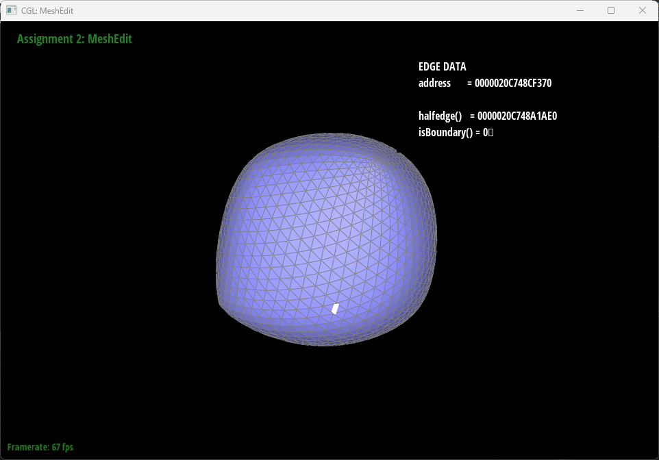
dae/cube.dae after three rounds of unsampling, with asymmetric shape |
|
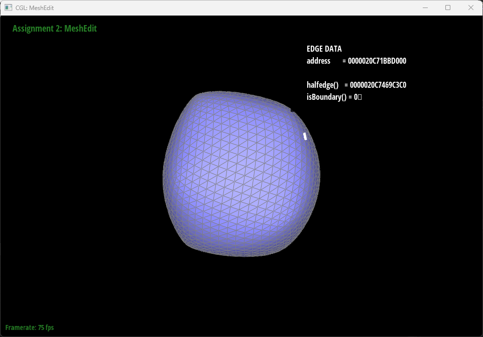
|
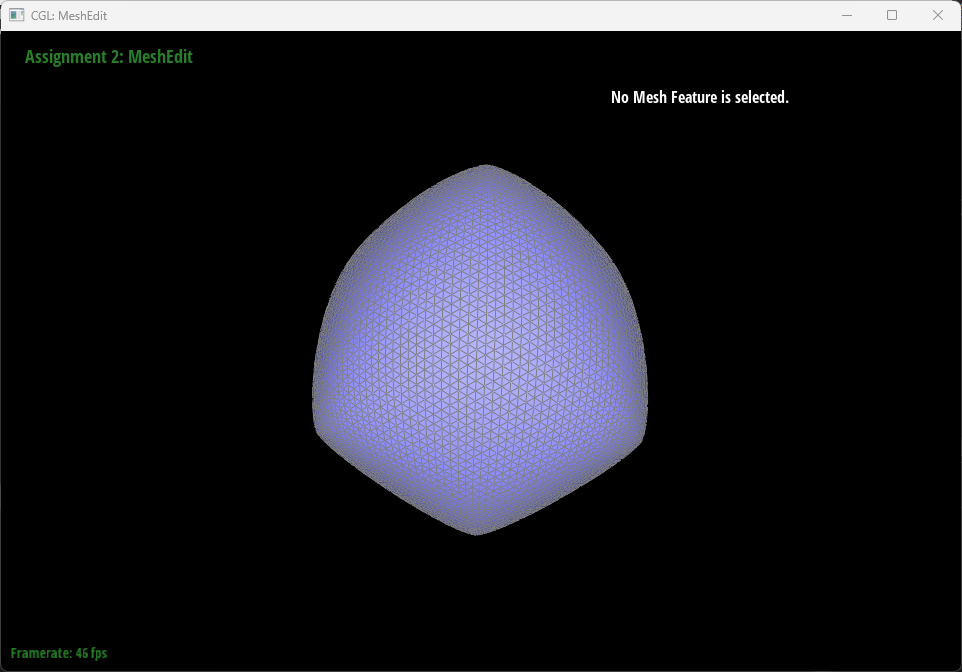
|
The fix is shown in pictures below. To fix this problem, we need to guarantee two things:
- All the corner vertices have the same degree.
- The new vertex on each face takes the same weight for its 4 neighbor vertices.
|
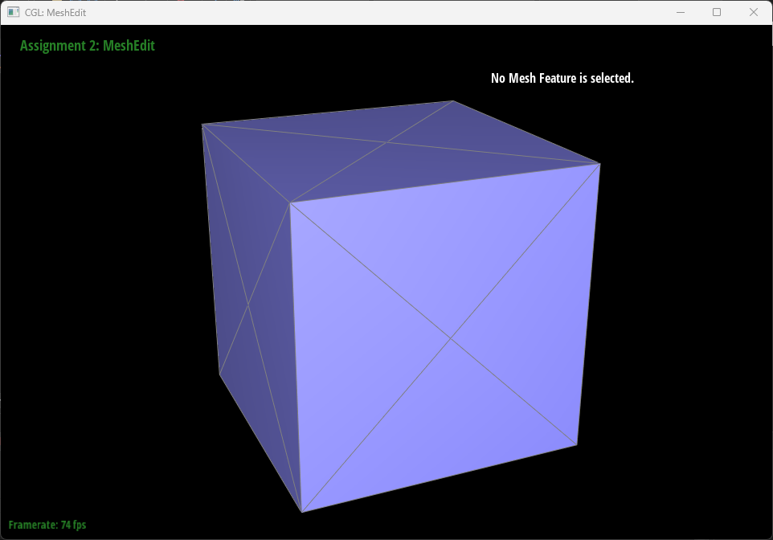
|
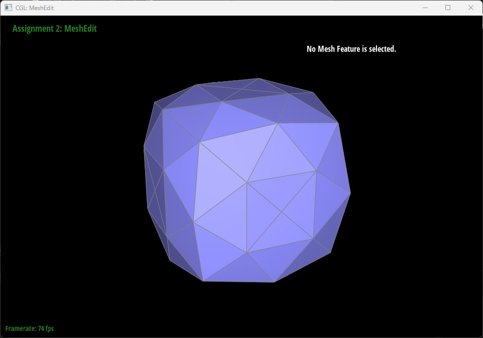
|
|
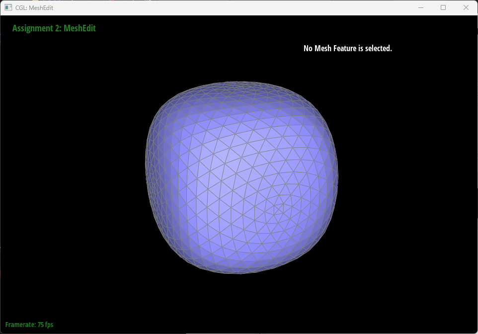
|
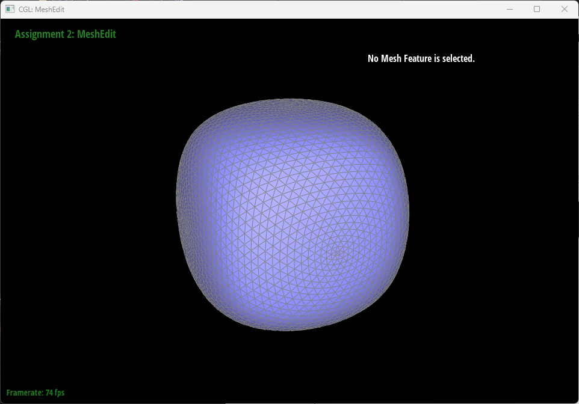
|
If you have implemented any extra credit extensions, explain what you did and document how they work with screenshots.
YOUR RESPONSE GOES HERE
Part 7 (Optional, Possible Extra Credit)
Save your best polygon mesh as partsevenmodel.dae in your docs folder and show us a screenshot of the mesh in your write-up.YOUR RESPONSE GOES HERE
Include a series of screenshots showing your original mesh and your mesh after one and two rounds of subdivision. If you have used custom shaders, include screenshots of your mesh with those shaders applied as well.
YOUR RESPONSE GOES HERE
Describe what you have done to enhance your mesh beyond the simple humanoid mesh described in the tutorial.
YOUR RESPONSE GOES HERE